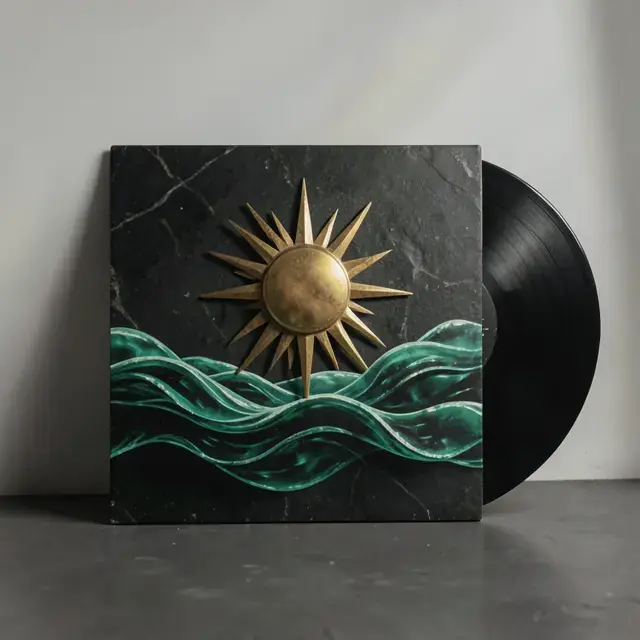

Home
Three people. A lot of synth.
The Night Shift is a three-piece synth rock band. It is dark and it is loud, and that is the whole idea.

The Night Shift is a three-piece synth rock band. It is dark and it is loud, and that is the whole idea.
